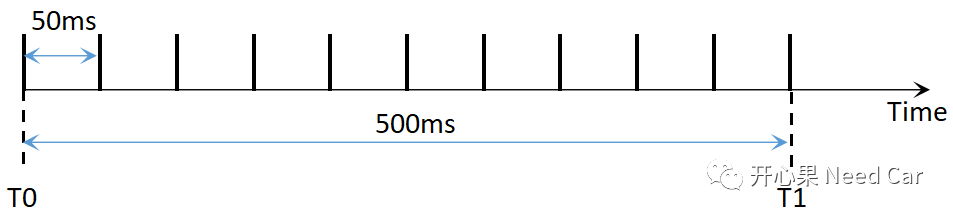
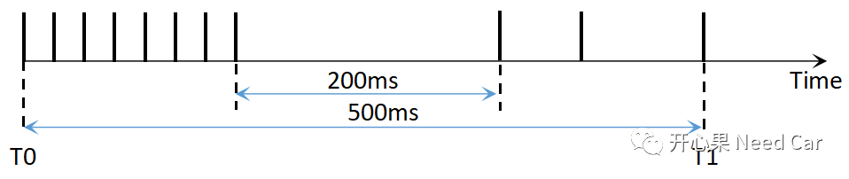
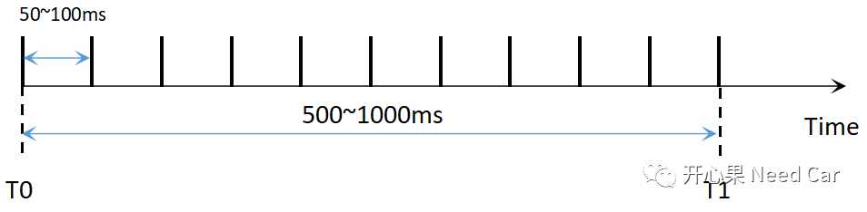
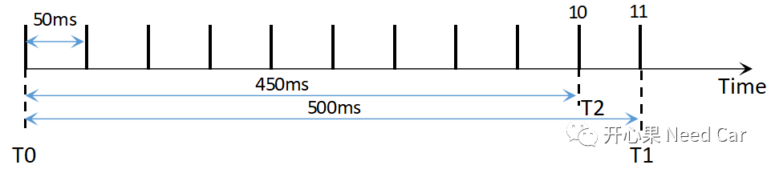
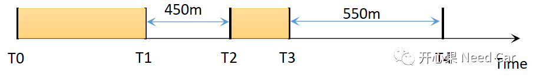
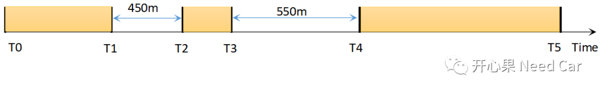
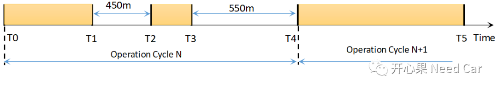
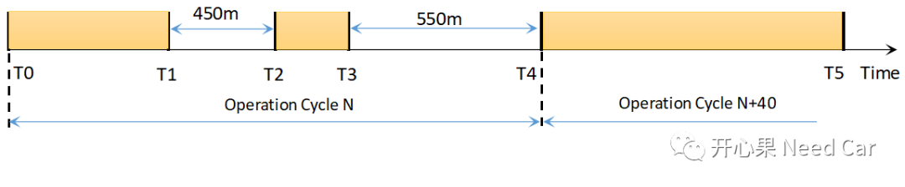

写在前面：
有读者留言希望能再出一期Autosar DEM诊断事件管理的文章，自然的，我不能辜负你的期待，我会记住大家关切的问题。如果我恰好有这一块的开发经验，我会分享给大家，把我对Autosar/嵌入式的理解，结合项目开发经验完全的share，如果我的文章帮到了你，或者觉得有用，请分享给更多的工程师，尤其刚入行的工程师。因为自己走过那段路，迷茫和不解困惑过自己，因此更想把自己的经验分享出来，让更多的工程师感受到玩Autosar的乐趣，而不是“折磨”。
当然，我也是一个Autosar/嵌入式的学徒，不懂得很多，如果在技术上表达不准确或者错了，请大家批评指正！
在实际的项目开发中，通信节点丢失故障大家应该不陌生。实际上，这一块的问题不仅在开发阶段暴露得多，就算产品量产也可能存在通信节点乱报DTC的情况，所以，本文侃侃通信节点丢失的需求如何理解，测试又会怎样测。举例：某个报文（假设为Message_A）是周期性报文，周期50ms，要求Message_A连续丢失10次报FAILED，存储故障信息，连续10次正常接收报PASSED。前提：故障上报前需满足诊断使能条件，诊断开启条件可以参考前文通信诊断监控开启条件。
作为开发人员，先别着急上手Coding，有几个问题你先确定自己理解到位。
QA1：需求中的“连续”如何解读？
"连续"是指500ms内收到10次Message_A吗？如果Message_A的接收间隔为50ms，如下所示，确实满足理想的"连续"10次，上报PASSED没问题。但是，测试人员在设计测试Case的时候会考虑各种故障状态，注入各种可能的故障，以此确保开发功能的可靠性。

如下图，T0到T1时刻，500ms内收到了11帧，中间有两帧间隔200ms，这样算"连续"接收吗？这种情况可以报PASSED吗？如果测试人员设计了这样的测试Case，你的开发没有过，你就需要重新去理解一下需求，找系统沟通。
这里多说一下，你可能会说，周期都不准，这样的测试Case不对。我个人不这样看，周期不准，需要归结到通信问题，这里测试通信节点丢失的问题，各种可能的工况都应考虑，以此确保开发的鲁棒性。

这里谈一下个人在做项目时的理解。Message_A的周期是50ms，一般会规定在其2倍周期内收到该报文，Message_A就算是连续接收到，即50~100ms内任意时刻收到Message_A就算连续，否则不连续，如下所示：
这样的话，连续收到10次Message_A的时间，即T0到T1时间可能是500ms~1000ms，500ms是指Message_A每50ms被接收一次(理想工况)，1000ms是指每100ms接收到一次Message_A。这样设计连续更合理，避免了短时间内Message_A的多次接收情况，比如：10ms内收到9帧，490ms只收到一帧。
上述是上报PASSED情况。相对上报PASSED情况，报FAILED的情况相对简单得多，即500ms内一帧Message_A没有收到，就上报FAILED。提示：这里2个周期根据项目具体要求，有的可能会要求3倍周期。这个问题和测试怎么测有关，这个需要和测试沟通清楚，避免开发和测试对需求解读不同。如下，如果测试连续收到10帧要能读到对应的故障信息，即T2时刻读取目标故障信息，则总时间450ms；如果测试要500ms（ta理解的10次 = 10*50ms）内要求读取到故障信息，即T1时刻读到预期故障状态，则ECU一共会发送11帧。
所以，上述两种情况对开发来说就是Counter的计数问题，但是测试能否通过，需要和测试、系统沟通清楚，即：具体要用何种方式实现。
Q3：周期性报文的偏差
因为任何周期性报文的发送都不可能精准无误，需求一般会给一个容差，且对不同级别的周期性报文，容差也会不同。
这里说一下我碰到过的需求：＜100ms的周期性报文，容差10%；＞100ms的周期性报文，容差3%。这与物理硬件有关，因为任何产品都有对应的精度。举例：Message_A 50ms周期，采用10%偏差，在45~55ms内接收到均可，这说明通信没问题。注意，不要和本文讨论的通信节点丢失混到一起，还是那句话：测试工程师负责故障注入，考虑各种故障发生工况。
对于DTC的测试，一般会测试当前故障、历史故障、故障老化等情况，测试在何时读取这些故障状态呢？
注意，在14229并没有当前故障、历史故障、故障老化的表述，这是我们平时口语化的产物。还是以Message_A为例来说一下这几个故障状态读取时机。满足故障诊断的使能条件以后，测试会在0.9Timeout~1.1Timeout时间内读取当前Message_A对应的故障状态。
- Message_A稳定接收一段时间（即T0到T1），确保上报一次PASSED，故障状态由0x50变为0x00，在T1时刻读取故障状态应为0x00；
- 丢失Message_A一段时间，T1到T2时间内丢失Message_A 9次，即0.9Timeout，在T2时刻读取故障，故障应该保持0x00，因为此时还不满足故障上报条件；
- Message_A稳定接收一段时间（T2到T3），T3时刻读取故障状态依然为0x00；
- 丢失Message_A一段时间，T3到T4时间内丢失Message_A 11次，即1.1Timeout，在T4时刻读取故障，故障由0x00变为0x2F，即当前故障上报。
注意：本例故障上报一次即confirmed，即Bit3置位，且不考虑Bit7，即支持的状态掩码为0x7F。

提示：Timeout是指10*Cycle，比如Message_A周期50ms，Timeout = 500ms。- 稳定地接收Message_A一段时间，确保上报一次PASSED，在T5时刻读取故障状态信息，状态应为0x2E。

- Operation Cycle N步骤同当前故障步骤；
- 在Operation Cycle N+1中稳定地接收Message_A一段时间，确保上报一次PASSED，在T5时刻读取故障状态信息，状态应为0x2C，即读取历史故障。

假设要求故障老化需要40个Cycle。
- 在Operation Cycle N+40个操作循环中稳定的接收Message_A，即每个循环内只报PASSED状态，在T5时刻读取故障状态信息，状态应为0x00，即故障老化。
